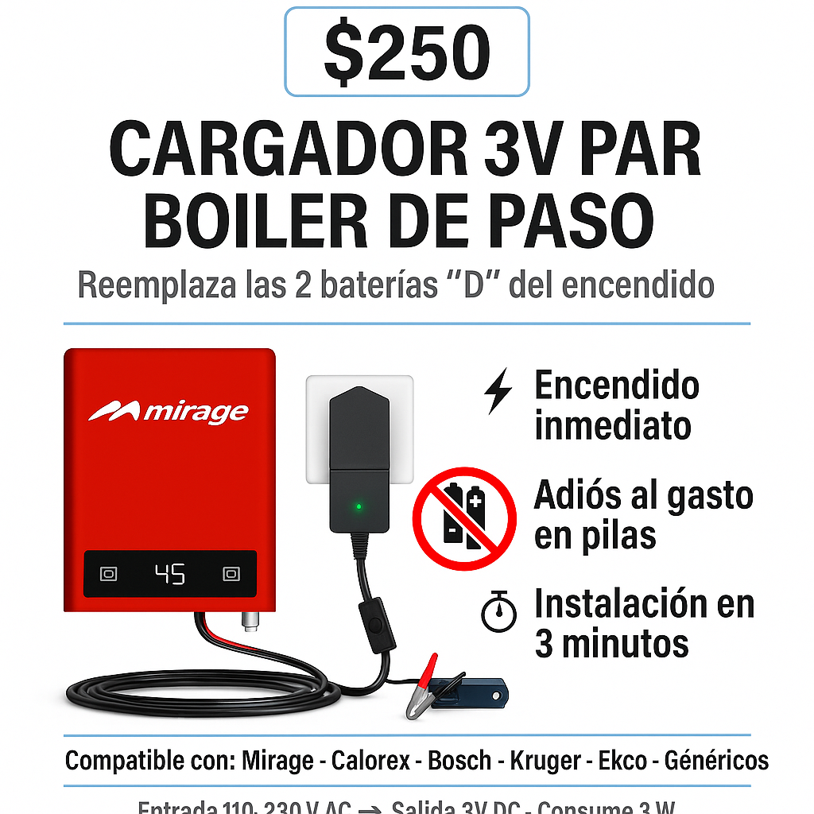

Energía estable sin interrupciones. Aprende a instalar tu cargador en 5 minutos para reemplazar las pilas tipo "D" de forma permanente.
 🟢 Comprar por WhatsAppMira el video a continuación para ver exactamente cómo se conecta tu nuevo cargador.
El proceso es sencillo y seguro. Sigue estas recomendaciones (que complementan el video) para un resultado perfecto:
Desconecta el cargador de la luz antes de empezar.
El Tip del Experto: Aunque el cargador no da toques, siempre instala cualquier equipo eléctrico sin estar conectado a la corriente de pared.
Conecta el caimán rojo (+) y luego el negro (-) en los huecos de la caja de pilas.
¡Recuerda la Polaridad! El rojo va donde tocaba el lado positivo de la pila (la punta). Usa pinzas pequeñas para enganchar los caimanes en las laminillas del fondo.
Acomoda los cables antes de cerrar la tapa del compartimento.
Para evitar daños, asegúrate de que la tapa NO cierre sobre el cable delgado. Empújalos o haz una pequeña muesca a la tapa si es necesario.
Conecta el cargador a la corriente. El LED verde debe encender. Abre el agua caliente.
El encendido debe ser instantáneo. Esto confirma que el cargador está enviando los 3V estables.
Di adiós a los gastos de pilas costosas que se acaban en el peor momento.
Entrega 3V estables, eliminando el encendido lento o débil que dan las pilas agotadas.
Tu cargador incluye protección integrada contra cortocircuitos.
El experto en el video hace hincapié en que guardes tus pilas viejas que aún tengan carga.
Explicación: Si hay un corte de luz en tu casa, el cargador deja de funcionar. Si guardaste tus pilas, puedes desconectar los caimanes, poner tus pilas de emergencia y seguir usando agua caliente hasta que regrese la luz. ¡Es tu plan B perfecto!